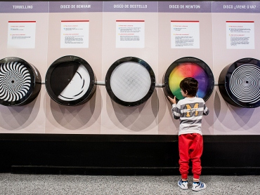
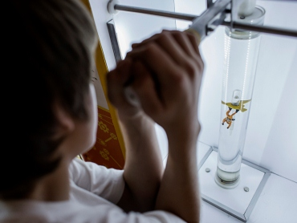
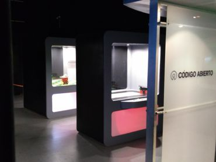
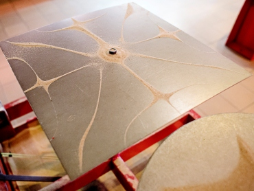

En esta sala encontrarás fenómenos tales como ilusiones ópticas relacionadas con el color y el movimiento, figuras imposibles, imágenes contradictorias y muchas sorpresas más.

Un conjunto de exhibiciones que tratan las principales leyes y principios que rigen el mundo mecánico. Algunas exhibiciones concuerdan con el sentido común del observador y otras lo desafían, despertando la curiosidad del visitante.

Un espacio descubrir tecnologías. Podrás ver una impresora 3D en funcionamiento, manejar un brazo robot, jugar con robots creados con arduino, pantallas de reconocimiento facial y mucho más.

¡Vení a conocer la sala de Música, Ondas y Sonido! Escuchamos música, temblamos con un trueno, pero... ¿qué son los sonidos? En la sala de Música, Ondas y Sonido podrás experimentar desde la propagación de los sonidos hasta la visualización de los mismos.